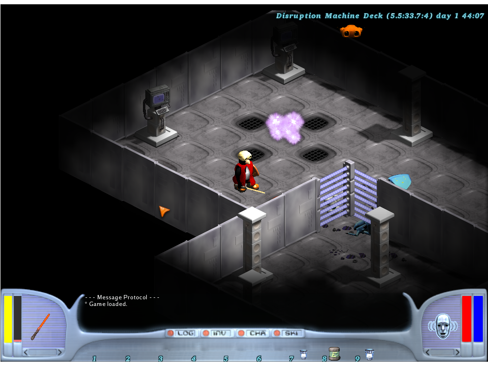

Para otros usos de este término, véase RPG.

Un videojuego de rol o juego de rol por computadora/ordenador, también llamado por simplificación juego de rol (JDR), o referido con la sigla inglesa RPG (role-playing game) o CRPG (computer role-playing game), es un género de videojuegos donde el jugador controla las acciones de un personaje (o de diversos miembros de un grupo) inmerso en un mundo detallado. La gran mayoría de estos videojuegos tienen sus orígenes en juegos de rol de sobremesa[1] (incluyendo Dungeons & Dragons) y usan mucho de la misma terminología, escenarios y mecánicas de juego. Otra de las mayores similitudes con los juegos de lápiz y papel incluyen una desarrollada historia y elementos narrativos, el crecimiento del personaje del jugador, complejidad, así como también rejugabilidad e inmersión. El medio electrónico elimina la necesidad de un director de juego e incrementa la velocidad de resolución de combate. Los JDR han evolucionado desde videojuegos de texto a experiencias 3D visualmente ricas.
Véase también: Juego de rol
Juego de rol se traduce del español al inglés como "role-playing game", literalmente «juego de interpretación de papeles». El videojuego de rol como género de videojuegos incluye una amplia variedad de sistemas y estilos de juego. Algunos elementos fuertemente asociados a los juegos de rol, como el desarrollo estadístico de personajes, han sido adaptados ampliamente a otros géneros de videojuegos. Aunque usen la palabra «rol», no pueden ser considerados como juegos de rol en sí. La proliferación de este tipo de juegos en los últimos años y el uso de la palabra «rol» para nombrarlos ha hecho que un gran número de personas crea (erróneamente) que los videojuegos de rol son realmente juegos de rol en sí mismos.
Se considera que el género comenzó en los años 70 con el lanzamiento en Apple II y MS-DOS del videojuego Akalabeth: World of Doom en 1979. Título que fue desarrollado por un adolescente Richard Garriott, inspirado por juegos de rol de mesa como Dungeons & Dragons, que fuera publicado en 1974 por la editorial TSR, Inc. Otras fuentes de inspiración para los primeros videojuegos de rol fueron videojuegos de deportes, videojuegos de aventura, juegos de estrategia como el ajedrez, novelas de fantasía de autores como J. R. R. Tolkien e incluso antiguas epopeyas que seguían la misma estructura básica de emprender varias misiones para lograr un objetivo final.
Tras el éxito de algunos ejemplares de este género como "Dragon Quest", "Final Fantasy" y "Megami Tensei", el género se ramificó en dos estilos, los JRPG y WRPG, juegos de rol japoneses y juegos de rol occidentales respectivamente. Además, mientras que los primeros videojuegos de rol eran para un único jugador, la popularidad de los modos multijugador se incrementó durante la década de 1990, con videojuegos de rol de acción como Secret of Mana y Diablo. Con la llegada de Internet, muchos juegos multijugador han crecido para convertirse en juegos de rol masivos en línea, por ejemplo Lineage, World of Warcraft, Final Fantasy XI o Ragnarok Online.
Actualmente, predomina la propuesta de videojuego donde se controla y representa cabalmente a un personaje (o varios), que debe cumplir con una serie de objetivos o misiones bien establecidos por los programadores; usualmente, se crea un mundo perteneciente a un tema de fantasía épica. Para ello, se viene utilizando una interfaz gráfica cada vez más vistosa para utilizar un sofisticado inventario de poderes humanos y sobrenaturales (que el jugador desarrolla poco a poco con práctica y muchas horas de juego), recursos monetarios y objetos diversos en propiedad (comprados o encontrados de manera fortuita), para el logro de las metas.
Uno de los primeros videojuegos de rol en una microcomputadora fue Dungeons & Dragons, escrito por Peter Trefonas y publicado por CLOAD (1980). Este juego fue publicado para un TRS-80 modelo 1, ocupaba 16 KB e incluía un analizador sintáctico por línea de comandos, generación de personajes, una tienda para comprar equipamiento, combate, trampas que resolver y una mazmorra que explorar. Algunos de estos primeros juegos estaban basados en sus contra partes diseñadas para computadoras centrales (por ejemplo Telengard), mientras que otros como Ultima o Wizardry (los más exitosos) eran adaptaciones directas de D&D. Estas primeras generaciones incluían vistas en primera persona y en tercera persona, algunos juegos incluso disponían de ambas opciones. La mayoría de características de este género fue desarrollado en esta época, anterior al lanzamiento de Ultima III: Exodus, una de las principales influencias para el desarrollo de RPG para ordenadores y consolas. Algunos ejemplos de estas características son el combate controlado desde un menú de Wizardry, el combate táctico en una "pantalla de combate" especial de Tunnels of Doom y el combate en tiempo real de Dungeons of Daggorath.
Comenzó en 1984 con Questron y 50 Mission Crush, SSI produjo una gran cantidad de CRPG. Su videojuego Phantasia lanzado en 1985 introdujo el concepto de automapping y pergaminos dentro del videojuego que proveían al jugador de pistas e información de trasfondo. También lanzaron Pool of Radiance en 1988, el primero de una serie de CRPG llamada Gold Box, basados en las reglas de Advanced Dungeons & Dragons. Estos juegos ofrecían al jugador una vista en primera persona para el movimiento, combinada con una perspectiva táctica en tercera persona para el combate. Una característica común para los juegos de esta época, llamada edad de oro de los CRPG por Matt Barton, es el uno de numerosos párrafos numerados, impresos en manuales y/o libretas adjuntas, que contenían los textos más largos del videojuego; lo que permitía que se dirigiera al jugador hacia esos párrafos en lugar de mostrarle la información en pantalla. El mayor ejemplo de esta aproximación fue la trilogía Star Saga (de la cual solo dos juegos fueron publicados); el primer juego contenía 888 textos (muchos de ellos más largos que un simple párrafo) repartidos en 13 libretas, mientras que el segundo contenía 50.000 párrafos repartidos en 14 libretas. La mayoría de los juegos de esta época tenían combates basados en turnos, aunque Dungeon Master y sus imitadores ofrecían combate en tiempo real. Otros ejemplares clásicos de esta etapa son The Bard's Tale, Wasteland, el comienzo de la saga Might and Magic y la continuación de la saga Ultima.
Más tarde, a mediados de los años 1990, se hicieron habituales los RPG orientados a la acción, basados en sprites e isométricos; con publicadores como Interplay Entertainment y Blizzard North siendo líderes con juegos como Fallout, las sagas Baldur's Gate y Icewind Dale, y Diablo. Esta época también vio un movimiento hacia los motores gráficos en 3D, con juegos como The Elder Scrolls: Arena y Mandate of Heaven. TSR, poco satisfecha con los últimos productos de SSI, por ejemplo Menzoberranzan transfirió la licencia de AD&D a diferentes desarrolladoras y acabó otorgándoselo a BioWare, quien la usó en Baldur's Gate y varios otros juegos. Para el año 2000 los motores gráficos en 3D habían dominado el mercado.
El primer RPG en una consola fue Dragonstomper lanzado para Atari 2600 en el año 1982.[2] Otro de los primeros RPG para consolas fue Bokosuka Wars, originalmente lanzado para la Sharp X1 en 1983[3] y más tarde porteado para MSX en 1984, para Nintendo Entertainment System (NES) en 1985 y para Sharp X68000 con el nombre de New Bokosuka Wars. Este videojuego estableció las bases para el género SRPG a la vez que fue un temprano ejemplo de un ARPG. En 1986, Chunsoft creó el videojuego llamado Dragon Quest (conocido como Dragon Warrior en América del Norte hasta la octava entrega) para NES, que ha sido calificado como una base para los videojuegos de rol desde entonces.
En 1987 fue lanzado Zelda II: The Adventure of Link para Famicom Disk System, este fue uno de los primeros videojuegos de rol de acción, combinando elementos del juego de acción-aventura que era su predecesor The Legend of Zelda con elementos característicos de un RPG basado en turnos.[4] Muchos de los RPG de esta época tenían un combate basado en turnos. El videojuego para NES de Square, Final Fantasy introdujo las batallas de vista lateral, con los jugadores en la parte derecha y los enemigos a la izquierda, lo que pronto se volvió una norma para numerosos RPGs de consola. En 1988, Dragon Warrior III introdujo un sistema de progresión de personajes que permitía al jugador cambiar las clases de los personajes durante el curso del videojuego. Otra innovación fue la introducción de ciclos día/noche, y personajes, objetos y misiones solo accesibles en partes concretas de este ciclo.[5] En 1989, Phantasy Star II para Mega Drive estableció una serie de convenciones para el género, incluyendo una historia épica, dramática y dirigida a los personajes que trataba de asuntos serios, y un sistema de combate basado en la estrategia.
Los RPGs de las consolas se distinguieron de los de computadora en un mayor grado a principios de la década 1990. Los RPGs de consolas se basaron mucho más en la trama que sus contrapartes para ordenadores. Los ejemplares de consolas en muchas ocasiones presentaban personajes muy detallados con rasgos muy distintivos y relaciones muy intrincadas entre ellos, dando la impresión de que querían ofrecer más que los juegos de rol tradicionales. El romance en particular fue un tema común en la mayoría de RPGs de consolas en la época, aunque estuvo ausente en los RPGs de ordenador. Durante la década 1990, los RPGs de consola se convirtieron en la parte dominante, influyendo más estos a los RPG de ordenador que a la inversa. En ese momento los RPG de consola eclipsaron completamente a los de ordenador, sin embargo, los RPGs de ordenador volvieron a tomar fuerza a finales de la década introduciendo aventuras llenas de elecciones que debía de tomar el jugador.
La próxima gran revolución apareció en la década 1990, con la aparición de los discos ópticos en la quinta generación de consolas. Las implicaciones de esto para los RPG fueron muchas; misiones más complejas, audio de más calidad y videos de movimiento completo. Esto quedó demostrado claramente en 1997 con el éxito de Final Fantasy VII, que ha sido considerado desde su lanzamiento uno de los juegos más influyentes de todos los tiempos. Con un presupuesto para producción récord, de alrededor de 45 millones de dólares,[6] Final Fantasy VII alzó las posibilidades de este género, con su inmenso mundo explorable, misiones mucho más largas, numerosas misiones secundarias, numerosos minijuegos y presupuesto de producción mucho mayor. Esto último dio la posibilidad de usar personajes en 3D y entornos pre-renderizados, batallas vistas desde muchos ángulos en lugar de un único ángulo y, por primera vez, video de movimiento completo CGI completamente integrado con el juego. Tras poco tiempo el juego fue portado a PC donde obtuvo mucho más éxito, haciendo la línea entre los RPG de ordenador y los de consola aún más difusa.
Tras el éxito de los RPG de consola en Japón, el género comenzó a ser clasificado en dos estilos muy diferentes: RPGs de ordenador y RPGs de consola, debido al estilo, jugabilidad o razones culturales; con estos últimos habiéndose vuelto muy populares e influenciados por el estilo de videojuegos japonés. A pesar de esto, a principios del siglo XXI, cuando las diferencias entre plataformas se hicieron difusas, los RPGs de ordenador y de consola acabaron siendo clasificados como videojuegos de rol occidentales (WRPG) y videojuegos de rol orientales (JRPG) respectivamente.
A pesar de compartir características fundamentales, las diferencias entre estas dos corrientes eran grandes. Los WRPGs tienden a tener gráficos más oscuros, personajes más viejos y están más centrados en la libertad del jugador, el realismo y las mecánicas del juego. En contraste, los JRPGs suele tener gráficos más brillantes y similares al anime, personajes más jóvenes y están más centrados en historias más lineales con tramas más intrincadas. De hecho, es común que los WRPG permitan al jugador crear su propio personaje desde la nada y tengan un sistema de árbol de diálogos que permite al jugador tomar sus propias decisiones.[7] Por otra parte, los JRPG limitan a los jugadores a desarrollar personajes predefinidos y no suelen dar la opción de crear uno propio o hacer decisiones respecto a la trama.[8] A principios de los años 1990, los RPG japonenses se consideraban cercanos a las novelas de fantasía, sin embargo, hacia el final de la década se habían vuelto mucho más cinemáticos (por ejemplo, la saga Final Fantasy), mientras que los WRPG se habían vuelto más similares a novelas. A finales del año 2000, los WRPG también habían adoptado un estilo más cinemático (por ejemplo, la saga Mass Effect).[9]
Una razón para la existencia de estas diferencias es que muchos JRPG tempranos podían ser vistos como una forma de "manga interactivo" o anime envuelto en sistemas de reglas occidentales, además de la influencia de las novelas visuales. Como consecuencia los JRPGs de consola se diferenciaron con un énfasis mayor en la narrativa y el drama junto con una jugabilidad más lineal. En los últimos años estas tendencias parecen haber sido adoptadas por algunos WRPG, que han empezado a moverse hacia narrativas muy estructuradas, además de eliminar algunas reglas en favor de una jugabilidad más ágil y similar a juegos de acción. Es más, una serie de videojuegos independientes occidentales son considerados JRPGs, sobre todos aquellos de la "era de 16 bits", en parte debido a la herramienta de desarrollo RPG Maker.
Otra de las diferencias entre estos dos subgéneros es la prominencia del kawaisa en los JRPGs y las diferentes aproximaciones respecto a la estética de los personajes. Los WRPGs tienen a mantener un tono serio, con protagonistas masculinos exhibiendo características físicas y personalidades que son consideradas masculinas. Los protagonistas de los JRPG tienden a ser diseñados con un énfasis en la belleza estética, incluso algunos personajes masculinos son andróginos o bishōnen en apariencia. Las diferencias en estilo se deben en muchas ocasiones a la audiencia objetivo: Los WRPG suelen estar enfocados a un público masculino adolescente o adulto, mientras que los JRPG suelen estar enfocados a una demografía mucho más amplia, incluyendo público femenino.
Es habitual que los RPG japoneses modernos muestren batallas basadas en turnos, mientras que los RPG occidentales modernos suelen tener batallas en tiempo real.[10][8][11] En el pasado, lo contrario solía ser más frecuente, las batallas de acción en tiempo real eran más habituales entre los RPG de consola japoneses que entre los RPG de ordenador occidentales ya que los gamepads están mucho mejor preparados para este tipo de combate que los teclados de ordenador. Por supuesto hay excepciones a esto, como Final Fantasy XII (2006) y Shin Megami Tensei: Devil Summoner (1995), dos RPG orientales modernos con combate en tiempo real; y The Temple of Elemental Evil (2003), un RPG occidental moderno con combates basados en turnos.
Unos de los principales atractivos que persiguen los aficionados a esta clase de videojuego, se aprecian precisamente en la jugabilidad del combate de tipo medieval cada vez más complejo y realista en ciertos aspectos, como en los movimientos y rasgos humanos más naturales en general, los bienes virtuales que se poseen (en especial armas y efectos de guerra encantados o mágicos, que facilitan el juego notablemente, o que simplemente, se presumen), el detalle en las estadísticas que arroja la aventura y los reconocimientos al tiempo invertido en el videojuego (niveles de las habilidades alcanzados, que define la respetabilidad del jugador ante los otros aficionados).
La duración de un solo juego de estos demanda mucho tiempo; puede variar mucho para su terminación o fin por parte del usuario promedio. Si se juega a un ritmo sano y detallista, no es raro observar un periodo de varios meses e inclusive más de un año (dependerá de la veneración que le dedique cada jugador a determinado videojuego y si lo abandona por periodos). El juego puede mezclarse con otro género como rol y aventura.
A diferencia de los juegos de acción, los combates de un RPG son un desafío táctico, y los videojuegos de rol conllevan decisiones no relacionadas directamente con la acción, por ejemplo, la gestión de un inventario, la elección de opciones de diálogo y la compraventa de objetos.
A pesar de que los RPG comparten algunas reglas de combate con los juegos de guerra, en los juegos de rol se controla un pequeño grupo de personajes. En los juegos de guerra se tiende a tener grandes grupos de unidades idénticas, junto a unidades no humanoides como tanques y helicópteros. Los juegos de rol no suelen permitir al jugador producir más unidades que las predeterminadas, a pesar de que existen ejemplos que han combinado características de ambos, como la saga Heroes of Might and Magic que combina héroes individuales (similares a los de los RPG) con grandes cantidades de tropas en batallas a gran escala (al estilo de los juegos de guerra).
Los RPG rivalizan con los juegos de aventura en términos de tramas ricas, en contraste a géneros que no dependen de su trama, como los juegos de deportes o los juegos de puzles. A pesar de ello, los juegos de aventuras suelen tener personajes bien definidos, mientras que los RPG pueden dar la opción de que el jugador diseñe su propio personaje. Los juegos de aventura suelen centrarse en un único personaje, mientras que en los juegos de rol la trama gira alrededor de un grupo de personajes. Además, los RPG suelen tener un sistema de combate, cosa de la que suelen carecer los juegos de aventuras. Mientras que ambos géneros pueden centrarse en el desarrollo personal o psicológico de un personaje, los RPG suelen hacer énfasis en un complejo sistema de economía donde los personajes son definidos por unos atributos numéricos.
Los elementos de jugabilidad asociados con este género, como el desarrollo de personajes estadístico, han sido adaptados a otros géneros. Por ejemplo, Grand Theft Auto: San Andreas, un videojuego de acción-aventuras, usa recursos estadísticos para definir un amplio rango de atributos como el aguante, el atractivo la habilidad con armas, conducción, capacidad pulmonar y tono muscular; y usa numerosas escenas y misiones para avanzar en la historia. Warcraft III: Reign of Chaos un juego de estrategia en tiempo real, contiene héroes que pueden completar misiones, obtener nuevo equipamiento y aprender nuevas habilidades a medida que avanzan de nivel, características propias de un RPG.
Artículo principal: Videojuego de rol de acción
Habitualmente, los juegos de Acción RPG permiten controlar un único personaje en tiempo real, y suelen estar muy centrados en el combate y la acción, con la trama y la interacción de personajes mantenida al mínimo. Los juegos RPG de acción tempranos tendían a seguir la plantilla establecida en 1980 por juegos como la saga Ys, que se caracterizan por un combate hack and slash, donde las acciones del personaje son controladas directamente, usando un teclado o un controlador de juego, en lugar de usar menús. Esta plantilla fue refinada por el juego de acción aventura, The Legend of Zelda (1986), que estableció una fórmula que fue usada por muchos RPG de acción que se desarrollarían después, incluyendo innovaciones como un mundo abierto, jugabilidad no lineal y un botón de ataque que animaba el lanzamiento de un proyectil o un arco de espada. Este juego fue responsable del surgimiento un gran número de RPG de acción, lanzados desde finales de los años 1980, tanto en Japón como en Norteamérica. La saga The Legend of Zelda seguiría siendo una gran influencia en la transición tanto en consola como en ordenador de los RPG basados en turnos y con gran número de recursos estadísticos hacia los más orientados a la acción.
Otra variante de la fórmula de los RPG de acción fue popularizada por el videojuego Diablo (1996), donde la mayoría de los comandos, como moverse y atacar, son ejecutados mediante clics de ratón en lugar de menús (a pesar de que algunos hechizos pueden asignarse a teclas). En muchos RPG de acción, los personajes no jugadores o NPC sirven a un único propósito, ya sea el de comprar o vender objetos, mejorar las habilidades del jugador o darle misiones centradas en combates. Los problemas que los jugadores afrontan suelen tener también soluciones basadas en la acción, por ejemplo, romper una puerta de madera con un hacha en lugar de encontrar una llave, aunque otros juegos ponen énfasis en otras habilidades de personajes como podría ser la de usar ganzúas para abrir estas puertas.
Un desafío habitual a la hora de desarrollar RPGs de acción es el de incluir contenido más allá de matar enemigos. Con la escasez de objetos, localizaciones y monstruos encontrada en muchos de estos juegos, puede ser difícil crear la profundidad necesaria para ofrecer a los jugadores una experiencia única adaptada a sus creencias, gustos o acciones. Este desafío es aun mayor si el juego hace uso de la aleatorización, como es común. Un ejemplo de un juego que fue más allá de esto es Deus Ex (2000) que ofrecía múltiples soluciones a los problemas usando opciones de historia intrincadamente relacionadas y entornos construidos individualmente. En lugar de simplemente abrirse paso entre los niveles, los jugadores eran desafiados a ponerse en lugar de su personaje escogiendo apropiadamente opciones de diálogo y usando el entorno que los rodeaba de forma inteligente. Esto ofrecía una experiencia que era única para cada situación en contraste a una que se repitiera en todas.
Los RPG de acción eran mucho más comunes en consolas que en ordenadores. A pesar de haber numerosos intentos de crear RPG de ordenador orientados a la acción durante las décadas de 1980 y 1990, a menudo basándose en Zelda, muy pocos tuvieron algún éxito, con el videojuego lanzado en 1992 Ultima VII siendo uno de los más notables ejemplos en Norteamérica. En el PC, el efecto de Diablo en el mercado fue muy significativo en el mercado de los años 1990. Tuvo muchos imitadores y su estilo de combate fue usado por juegos que vinieron después. En los años posteriores los juegos que imitaban la fórmula de Diablo fueron referidos como "Clones de Diablo".
También se pueden incluir en este subgénero otros tipos de juegos que incorporan elementos de RPG siendo juegos de acción, como los juegos de disparos de rol. La saga Mass Effect los juegos Borderlands 2 (2012) Fallout 3 (2008) y The 3rd Birthday (2010) son ejemplos recientes.
Artículo principal: Videojuego de rol táctico
Una serie de WRPG tempranos usaron una forma de combate con muchos componentes básicos, incluidos algunos de los juegos de la saga Ultima que introdujeron un combate basado en un tablero de casillas en Ultima III: Exodus (1983). Ultima III sería adaptado a muchas plataformas e influiría sobre el desarrollo de muchos títulos posteriores,[12] al igual que el título japonés Bokosuka Wars[13] lanzado el mismo año. A pesar de todo, el término RPG Táctico (abreviado TRPG o SRPG) se refiere tradicionalmente a un subgénero nacido en Japón; los orígenes de los RPG tácticos son difíciles de trazar en el lado americano del Pacífico, donde se desarrolló gran parte de los primeros RPG.[14] Los RPG tácticos son descendientes de los juegos de estrategia tradicionales como el ajedrez, y juegos de guerra estratégicos de mesa como Chainmail. El formato de un CRPG táctico es similar al de un RPG convencional en apariencia, ritmo y estructura de reglas.
Muchos RPG tácticos pueden ser extremadamente difíciles y requerir un gran cantidad de tiempo para ser jugados. Por tanto, el público objetivo de estos juegos son los jugadores hardcore. Históricamente, los TRPG han sido bastante populares en Japón, pero no han obtenido el mismo grado de aceptación en el resto del mundo.[15] A pesar de esto, la audiencia de los SRPG Japoneses ha crecido sustancialmente desde mediados de los años 1990, con títulos de PS1 y PS2 como Final Fantasy Tactics, Suikoden Tactics, Vanguard Bandits y Disgaea, que han obtenido un sorprendente grado de popularidad. Este éxito ha causado que muchos juegos sean relanzados mediante emulación de software (Por ejemplo en la consola virtual de Wii, e incluso sean rehechos y mejorados para ser lanzados en consolas portátiles. Un ejemplo de esto es Final Fantasy Tactics: The War of the Lions una versión mejorada de Final Fantasy Tactics relanzado para la Sony PlayStation Portable en 2007.
Muchos RPG occidentales han usado mecánicas similares durante años, mecánicas que fueron ampliamente definidas por X-COM: UFO Defense (1994) de la misma forma que los occidentales fueron influenciados por Fire Emblem. Los títulos occidentales como la saga X-COM habitualmente han permitido una mayor libertad de movimiento, así como de interacción con el entorno.[16] Otros ejemplos son las sagas Jagged Alliance (1994-2009) y Silent Storm (2003-2005), que le deben mucho a X-COM y sus secuelas (1994-1997).[16]
Más allá de los juegos pertenecientes al propio género, existe un número de CRPG que puede decirse que tienen un combate táctico. Algunos ejemplos de la época de los CRPG clásicos son partes de la saga Ultima;[17] Wizard's Crown (1985) y The Eternal Dagger (1987) de SSI; Betrayal at Krondor (1993) y Retorno a Krondor (1998) de Sierra. Ejemplos más recientes incluyen The Temple of Elemental Evil (2003) de Troika Games que se caracterizan por una precisa implementación de las reglas de la edición 3.5 de Dungeons & Dragons, Kinght of the Chalice(2009) que está licenciado con la Open Game License licencia abierta D20 y Phyrric Tales: Prelude to Darkness (2002). De acuerdo a algunos desarrolladores, se está volviendo más y más difícil en los últimos años desarrollar este tipo de juegos para el PC e incluso algunos desarrolladores japoneses han comenzado a quejarse de un supuesto sesgo contra los sistemas basados en turnos.[18] Algunas de las razones citadas son el foco de los desarrolladores occidentales en crear juegos en tiempo real y orientados a la acción.[19
Artículo principal: Videojuego de rol multijugador masivo en línea
A pesar de que muchos de los RPG originales para el sistema Plato en los años 1970 permitían que varios jugadores jugaran simultáneamente, la popularidad de los modos multijugador no apareció hasta los años 1990. Por ejemplo, Secret of Mana (1993) uno de los primeros ARPG, desarrollado por Square, fue uno de los primeros RPG comerciales que incorporó un modo multijugador cooperativo, permitiendo a dos o tres jugadores adicionales participar cuando el personaje principal hubiese adquirido miembros para el grupo. Después, Diablo (1996) combinaría elementos de un CRPG y un ARPG con un modo multijugador por internet, que permitía a los jugadores entrar en el mismo mundo a luchar contra monstruos, comerciar objetos o luchar entre ellos.
Además, durante este periodo de tiempo, el género MUD que había aparecido a manos de MUD1 en 1978 estaba en una fase de expansión tremenda debido al lanzamiento de LPMud (1989) y DikuMUD (1991). Pronto, debido a la llegada de Internet, estas tendencias paralelas convergieron en la popularización de los MUD gráficos, que pronto serían conocidos como MMORPG. Comenzando con juegos como Meridian 59 (1995), Nexus: The Kingdom of the Winds (1996), Ultima Online (1997), Lineage (1998) y EverQuest (1999); y llegando a juegos más modernos como World Of Warcraft (2004), Empire Strike (2004), Final Fantasy XIV (2010), Guild Wars 2 (2012) o Ragnarok M: Eternal Guardians of Love (2017).
A pesar de ser superficialmente similares, los MMORPG llaman más la atención por sus características sociales, como poder jugar a la vez con cientos o miles de jugadores, y sus orígenes son los MUD en mayor medida que los CRPG como Ultima o Wizardry. En lugar de centrarse en características de "la vieja escuela" como memorizar gran cantidad de números y estadística, complejas estrategias, etc. estos juegos permiten a los jugadores pasar la mayoría del tiempo formando y manteniendo gremios y clanes.
Los MMORPG han sido muy criticados por haber diluido el sentimiento "épico" de los RPG de un solo jugador entre miles de jugadores. Puesto de una forma simple: todos quieren "Ser el héroe, matar al monstruo, rescatar a la princesa u obtener la espada mágica", pero cuando hay miles de jugadores compartiendo el mismo juego claramente no todos pueden ser el héroe.[20] Este problema se volvió obvio para algunos en el juego EverQuest, donde grupos de jugadores competirían y en ocasiones pelearían entre ellos para obtener objetos valiosos de monstruos de una misma mazmorra, lo que llevó a comportamientos indeseables como el robo de muertes, el camping y el robo de botines. En respuesta, los desarrolladores empezaron a crear mazmorras instanciadas[20] para evitar la lucha de los jugadores por unos recursos limitados, aunque esta solución tiene también sus detractores.
Por último, existen mercados como Corea y China, que a pesar de estar saturados de MMORPG han mostrado ser muy poco receptivos a los RPG de un solo jugador.[21] Por ejemplo, los PC conectados a internet son relativamente comunes en Corea, particularmente en los numerosos centros especializados en los que los jugadores pueden pagar para jugar a juegos multijugador, comparado a otras regiones, posiblemente debido a las prohibiciones históricas de importaciones japonesas y a una cultura que tradicionalmente ve los videojuegos como "juguetes frívolos" y los ordenadores como un medio para la educación. Como resultado, algunos se preguntan si los RPG para un solo jugador siguen siendo viables comercialmente, especialmente los de ordenador, cuando hay presiones enormes de mercado, como las necesidades de marketing de publicadores de renombre, la piratería, un cambio en la cultura y la competitividad de precios de los sistemas de consolas modernos.[22]